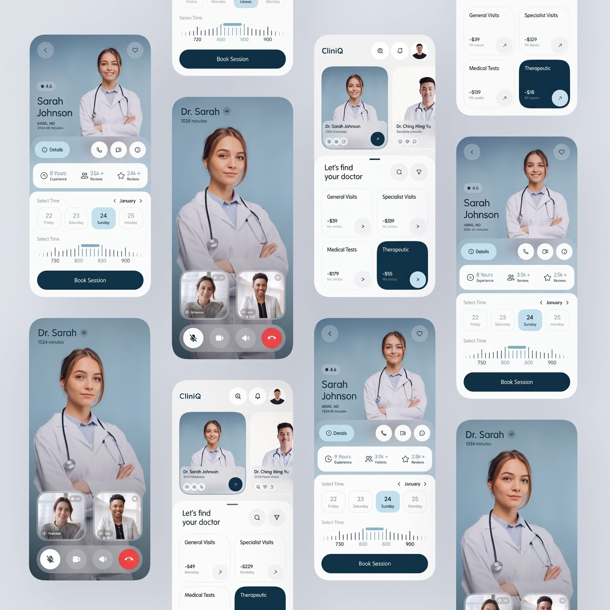

Lead Telehealth Designer
3 Months (2026)
Doctor App UI, Consultation Interface, Slot Selector
1 Designer, 3 Mobile Developers

About MyDoct
Personal design portfolio showcase detailing the creative journey, layout experiments, component grids, and UX strategy.
Problem Statement
- Patients struggle to evaluate doctor credentials and trust listings.
- Appointment scheduling involves back-and-forth calling and calendar friction.
- Telehealth sessions require switching from booking apps to third-party tools.
Proposed Solution
- Highlighted doctor photo, ratings, reviews, and experience on card profiles.
- Created simple service selection cards featuring upfront pricing.
- Connected appointment records to secure, in-app video consultation screens.
Design Process
13. MyDoct — Doctor Discovery & Appointment Booking App
Find the Right Doctor. Book the Right Time.
MyDoct is a mobile healthcare platform designed to simplify the process of discovering doctors, evaluating specialists, choosing an appointment time, and booking a medical session.
From the provided screens, the product is centered around a patient-first journey:
Discover → Search → Evaluate → Select Time → Book → Consult
The interface also introduces a video consultation experience, suggesting that the platform is designed to support both appointment booking and remote healthcare interactions.
The screens show a product branded CliniQ inside the interface, with doctor discovery, service categories, pricing, doctor profiles, scheduling, and video consultation functionality.
Important: I found public references to products named MyDoct, but I could not verify that those public products are the same product shown in your uploaded design. So the business/problem statements below are derived primarily from the actual UI and product flow shown in the project image, rather than being presented as verified facts about an external company.
Why MyDoct Exists
Finding healthcare should not feel like searching through a generic directory.
A patient typically needs to answer several questions:
Which doctor should I choose?
Is the doctor experienced?
Do other patients trust them?
What type of visit do I need?
How much will it cost?
When are they available?
Can I speak with them remotely?
How quickly can I book?
Traditional healthcare booking experiences often separate these decisions across different pages or systems.
MyDoct brings them together into one mobile experience.
The core product promise is:
Make finding and booking healthcare feel as simple as choosing a time that works for you.
The Business Problem
01 — Finding the Right Doctor Takes Too Much Effort
Patients often need to evaluate multiple doctors before deciding.
The product therefore makes important information visible directly on doctor cards:
Doctor name
Specialty
Experience
Rating
Reviews
Availability
This reduces the amount of searching required.
02 — Patients Need Trust Before Booking
Healthcare is fundamentally a trust-based service.
A patient isn't simply choosing a product.
They're choosing a professional to provide care.
The interface therefore emphasizes:
Rating + Experience + Reviews
For example, the doctor profile surfaces:
4.6 rating
8+ Years Experience
3.5K+ Reviews
These act as immediate credibility signals.
03 — Healthcare Pricing Can Be Unclear
The service-selection interface introduces different categories and their prices:
General Visits
Specialist Visits
Medical Tests
Therapeutic
This helps users understand the financial side of the appointment before committing.
The design makes pricing part of the discovery experience rather than hiding it until checkout.
04 — Scheduling Creates Friction
A patient doesn't simply need a doctor.
They need a doctor at a suitable time.
The booking interface therefore combines:
Date + Time + Doctor + Session
into one focused interaction.
This reduces the back-and-forth often associated with appointment scheduling.
05 — Healthcare Is Moving Beyond Physical Visits
The presence of a video consultation screen suggests that MyDoct also supports remote interactions.
The consultation interface includes:
Doctor video
Patient video
Microphone control
Camera control
Audio control
End-call action
This allows the appointment experience to continue inside the product rather than moving users to another communication platform.
Primary Audience — Patients Looking for Doctors
People who need to:
Find a doctor
Compare doctors
Check availability
Book appointments
Attend consultations
Busy Professionals
Users who may not have time to call clinics or wait for manual appointment confirmation.
They benefit from:
Search → Choose → Schedule → Book
Patients Seeking Specialists
Users who already know that they need a particular type of healthcare professional.
The service categories and doctor profiles make specialist discovery easier.
Remote / Telehealth Patients
People who prefer to consult a doctor digitally rather than physically visiting a clinic.
The video consultation interface directly supports this audience.
Patients Who Prioritize Trust
Users who care about:
Experience
Ratings
Reviews
Doctor profile information
The interface provides these signals before booking.
“I don't know which doctor to choose.”
“I want to see their experience before booking.”
“Can I trust this doctor?”
“How much will the appointment cost?”
“When is the doctor available?”
“I don't want to call a clinic just to schedule.”
“Can I speak to the doctor online?”
These pain points define the product journey.
The product experience was designed around six key goals:
Make doctor discovery effortless
Build trust before booking
Make services and pricing understandable
Make appointment scheduling visual
Reduce booking friction
Bring consultation into the same ecosystem
The product follows a very clear healthcare decision journey:
Discover → Trust → Select → Schedule → Book → Consult
Each stage has a dedicated interaction.
01 — Discover
The home screen introduces:
Let's find your doctor
This is an excellent product-oriented entry point.
The interface immediately presents:
Doctor cards
Search
Filter
Service categories
The user doesn't need to understand the entire platform first.
They can immediately start looking for care.
Doctor Discovery
Doctor cards show the most important information immediately.
For example:
Dr. Sarah Johnson
AIBBS, MD
2064+ minutes
alongside her photograph.
Another doctor is presented alongside her, allowing users to visually compare options.
Why Doctor Photography Matters
Healthcare is personal.
Showing the doctor's face creates a stronger sense of human connection than presenting names and text alone.
The large portraits also make the doctors feel like real people rather than entries in a database.
This is particularly useful in telehealth.
Doctor Profile
Selecting a doctor reveals a richer profile.
The interface shows:
Doctor name
Rating
Credentials
Experience
Reviews
Actions
Availability
The profile therefore combines:
Trust + Information + Action
in one screen.
Trust Layer
The profile includes three particularly important signals:
Rating
4.6
Experience
8+ Years
Reviews
3.5K+
Together they answer:
Is this doctor credible?
The patient doesn't have to navigate somewhere else to find this information.
Why Trust Information Is Above the Booking Flow
The product intentionally places credibility information before appointment selection.
This follows a natural healthcare decision:
“Can I trust this doctor?”
before:
“When should I book?”
That ordering is important.
Service Discovery
The platform also lets users select the type of healthcare service they need.
The visible categories include:
General Visits
For routine healthcare needs.
Specialist Visits
For specialist consultations.
Medical Tests
For diagnostic services.
Therapeutic
For therapy-related care.
Each category displays a price.
Why Service Categories Matter
Not every patient starts with a doctor.
Some users start with a need:
“I need a general consultation.”
Others start with a provider:
“I want Dr. Sarah.”
The product supports both entry points.
This makes the information architecture more flexible.
Pricing Transparency
The service cards display pricing directly:
-$39
-$329
-$139
-$15
The specific prices shown in the showcase appear to be sample/product UI values rather than verified real-world pricing.
From a UX perspective, their purpose is clear:
Help the patient understand cost before booking.
Search & Filter
The discovery interface includes both:
Search
and:
Filter
This supports two distinct behaviors.
Known Intent
“I already know which doctor I want.”
→ Search
Exploratory Intent
“I need help finding the right doctor.”
→ Filter / Browse
This is a strong marketplace-style interaction pattern.
Appointment Scheduling
The booking interface introduces:
Select Time
followed by a date selector.
The user can choose among dates such as:
22 Friday
23 Saturday
24 Sunday
25 Monday
The selected date receives a visually stronger treatment.
Why Date Selection Is Simple
The interface avoids a large traditional calendar.
Instead, it uses a compact horizontal date selector.
This is appropriate for mobile because it minimizes visual complexity.
The user can quickly scan nearby availability.
Time Selection
Below the date selector is a visual time scale.
The user can select a session around:
730 → 800 → 830 → 900
The selected time is emphasized using a visual marker.
This creates a more tactile scheduling interaction than a standard dropdown.
Why the Time Slider Is Effective
Traditional time dropdowns require users to:
Open → Scroll → Find → Select
The visual time scale makes availability feel more continuous.
It allows the patient to understand:
Where the available time sits within the day.
Booking CTA
At the bottom:
Book Session
is presented as the primary action.
The button remains visually dominant.
The user journey is therefore:
Doctor → Date → Time → Book
with minimal distractions.
Consultation Experience
The product also contains a dedicated video consultation screen.
The doctor occupies the main visual area.
Smaller participant windows appear near the bottom.
The controls include:
Microphone
Camera
Audio
End Call
This is a familiar interaction model, reducing the learning curve for users.
Why Telehealth Belongs Inside the Product
The booking journey and consultation journey become connected:
Discover Doctor
↓
Book Session
↓
Join Consultation
This removes the need for the user to manually move between unrelated services.
End-to-End Patient Journey
The entire product can be represented as:
Find a Doctor
↓
Evaluate
↓
Choose a Service
↓
Select Date
↓
Select Time
↓
Book Session
↓
Join Consultation
This is the central UX story of MyDoct.
Information Architecture
The product can be divided into four major layers.
Layer 01 — Discovery
Search
Filter
Doctor cards
Categories
Layer 02 — Evaluation
Doctor profile
Rating
Experience
Reviews
Services
Pricing
Layer 03 — Booking
Date
Time
Availability
Book Session
Layer 04 — Consultation
Video
Audio
Camera
Communication controls
This structure keeps the user's mental model simple.
Visual Design Strategy
The design uses a modern healthcare aesthetic combining:
Soft blue-grey backgrounds
White surfaces
Deep navy
Pale cyan
Rounded cards
Large doctor photography
Soft shadows
Minimal line icons
High-contrast CTAs
The visual language feels:
Professional + Calm + Human + Digital
Why Blue-Grey Works for Healthcare
The blue-grey environment creates a calm atmosphere.
Healthcare products need to communicate confidence without feeling aggressive.
The visual language therefore avoids excessive saturation.
Instead, it relies on:
Soft blue → Trust
White → Cleanliness
Navy → Professionalism
Rounded surfaces → Approachability
Doctor Photography as a Brand Element
The doctor portraits are treated almost like product imagery.
Large portraits appear repeatedly throughout the experience.
This creates a stronger emotional connection with the platform.
The product doesn't feel like:
“A medical database.”
It feels more like:
“A place where I can meet healthcare professionals.”
Card-Based Architecture
Cards are used for:
Doctors
Services
Pricing
Dates
Consultation participants
This gives every major piece of information a defined container.
It also creates consistency across different healthcare workflows.
Bottom-Weighted Mobile Actions
The booking screens place the primary CTA toward the bottom:
Book Session
This is ergonomically appropriate for mobile users.
It also creates a natural visual endpoint after the user has selected:
Date + Time
Progressive Disclosure
The product does not show every detail at once.
Instead:
Discovery
Show enough information to find a doctor.
Profile
Show enough information to trust the doctor.
Booking
Show enough information to schedule.
Consultation
Show only the controls required during the call.
This reduces cognitive load.
Business Value
A strong experience like this can create business value by:
Increasing Appointment Conversion
A shorter booking journey reduces friction.
Improving Doctor Discovery
Patients can compare doctors more easily.
Increasing Trust
Ratings, reviews, and experience are visible before booking.
Reducing Administrative Work
Patients can schedule appointments without relying on manual coordination.
Supporting Telehealth
Consultations can happen directly inside the product.
Increasing Service Visibility
Different healthcare services can be promoted and booked through the same ecosystem.
Marketplace Dynamics
MyDoct effectively connects two sides:
Patient
Needs:
Trust + Availability + Price + Convenience
Doctor / Provider
Needs:
Patients + Bookings + Visibility + Utilization
The platform sits between these two needs.
A successful UX must therefore work for both sides.
The Main Design Challenge
The central design challenge was:
How do you make a healthcare decision feel simple when the decision itself requires trust, information, timing, and money?
The solution is to structure the experience around the patient's natural decision process.
The UX Solution
Instead of:
Search → Lots of information → Confusion → Booking
the product creates:
Discover → Trust → Choose → Schedule → Consult
Each stage provides exactly the information needed for the next decision.
Before vs After
Traditional Healthcare Booking
Search Google
↓
Find clinic
↓
Check doctor
↓
Call clinic
↓
Ask about availability
↓
Ask about price
↓
Schedule
↓
Receive separate consultation instructions
MyDoct
Find doctor
↓
See rating + experience + reviews
↓
Choose service
↓
See price
↓
Select time
↓
Book Session
↓
Join consultation
The platform compresses multiple offline interactions into one digital journey.
What I Focused on as a Product Designer
01 — Doctor Discovery
Making it easy to browse and search healthcare professionals.
02 — Trust
Surfacing ratings, experience, credentials, and reviews before booking.
03 — Service Clarity
Helping users understand what type of visit they are selecting.
04 — Price Transparency
Showing service costs during discovery.
05 — Scheduling
Creating a simple date-and-time selection experience.
06 — Telehealth
Connecting booking directly to an in-app consultation experience.
07 — Human-Centered Healthcare
Using doctor photography and approachable visual design to make healthcare feel less transactional.
Design Outcome
The final experience transforms healthcare booking from a fragmented process into a continuous digital journey:
Find → Trust → Schedule → Consult
Instead of making patients coordinate multiple steps themselves, the product brings:
Doctor Discovery
Service Selection
Pricing
Availability
Booking
Telehealth
into one coherent experience.
Key UX Decisions
From Doctor Directory → Doctor Discovery
The product doesn't simply list doctors.
It helps users decide which doctor may be right for them.
From Generic Profiles → Trust Profiles
Ratings, experience, and reviews become part of the selection process.
From Service Lists → Service Decisions
Service categories are paired with pricing so users can understand what they're choosing.
From Calendar Complexity → Quick Scheduling
The compact date and time controls make appointment selection easier on mobile.
From Booking → Complete Care Journey
The product continues from appointment booking into video consultation.
From Clinical Interface → Human Experience
Large doctor photography, soft colors, and approachable cards make the platform feel less institutional.
Key Takeaways
Healthcare UX must reduce uncertainty.
Patients need confidence before taking action.
Trust should appear before conversion.
Rating, experience, and reviews should be visible before the booking CTA.
Scheduling should be effortless.
Date and time selection are among the most important interactions in an appointment platform.
Pricing transparency builds confidence.
Patients should understand the cost before they commit.
Telehealth should feel connected to booking.
The consultation should be a continuation of the appointment—not a completely separate experience.
Healthcare products should feel human.
Doctors are people, not database entries. Their presence should be reflected in the interface.
Good healthcare UX turns a complicated decision into a guided journey.
Find → Trust → Schedule → Consult.
Section 01 — Hero
Headline:
“Making healthcare easier to find, book, and experience.”
Supporting copy:
“MyDoct is a mobile healthcare experience that helps patients discover trusted doctors, compare services, schedule appointments, and connect through digital consultations.”
Project metadata:
Product: MyDoct
Category: Healthcare / Telehealth
Platform: Mobile App
Focus: Doctor discovery, appointment booking & teleconsultation
Keep the full multi-screen showcase prominent.
Section 02 — The Challenge
Headline:
“Finding healthcare shouldn't require a dozen steps.”
Show the problem as:
Find a Doctor
↓
Evaluate Trust
↓
Check Price
↓
Find Availability
↓
Book
↓
Join Consultation
Explain how fragmented healthcare journeys create friction.
Use a large doctor-profile crop beside the text.
Create the main journey:
DISCOVER → TRUST → SCHEDULE → CONSULT
Use four large stages.
Under each stage:
Discover
Find the right doctor.
Trust
Understand their experience and reputation.
Schedule
Choose a service, date, and time.
Consult
Meet the doctor digitally.
This should be the primary conceptual diagram of the case study.
Section 04 — Doctor Discovery
Headline:
“Start with the patient, not the system.”
Highlight:
Search
Filter
Doctor cards
Service categories
Pricing
Use annotation lines.
Section 05 — Trust
Headline:
“Before patients book, they need a reason to trust.”
Highlight:
4.6 Rating
8+ Years Experience
3.5K+ Reviews
Doctor Credentials
Explain how these elements reduce uncertainty.
Section 06 — Service & Pricing
Headline:
“Make the choice understandable before asking for commitment.”
Show:
General Visits
Specialist Visits
Medical Tests
Therapeutic
and their associated prices.
Explain that service and pricing information is surfaced before booking.
Section 07 — Appointment Scheduling
Headline:
“Turn appointment scheduling into a simple visual decision.”
Show:
Date → Time → Book Session
Highlight the horizontal date selector and visual time scale.
Section 08 — Progressive Disclosure
Create a visual:
Doctor Card
↓
Doctor Profile
↓
Schedule
↓
Consultation
Headline:
“Show the right information at the right moment.”
Explain how each screen progressively reveals more detail.
Section 09 — Telehealth
Headline:
“The journey doesn't end when the booking is confirmed.”
Show:
Doctor video
Patient video
Audio
Camera
End call
Explain how consultation becomes the natural final stage of the booking journey.
Section 10 — Visual Design
Use close-up crops from the showcase.
Show:
Doctor photography
Rounded cards
Blue-grey backgrounds
Navy CTA
Service cards
Rating badges
Time selector
Headline:
“Calm, human, and clinically trustworthy.”
Explain the visual language.
Section 11 — Component System
Show the repeated patterns from the screens:
Doctor Cards
Service Cards
Rating Badges
Date Selector
Time Selector
Buttons
Navigation
Consultation Controls
Explain how reusable components maintain consistency throughout the healthcare journey.
Section 12 — Before / After
Before
Search independently
Call clinics
Check doctor credentials
Ask about price
Ask about availability
Book manually
Use another tool for consultation
After
Find doctor
Check trust signals
Choose service
See price
Select time
Book
Consult
Headline:
“From fragmented healthcare booking to one connected journey.”
Section 13 — Product Outcome
Create the transformation:
DISCOVER
↓
TRUST
↓
SCHEDULE
↓
CONSULT
Then below:
Less uncertainty
Less friction
More confidence
Section 14 — Final Showcase
But this time, crop the individual screens and arrange them according to the journey:
Doctor Discovery
→
Doctor Profile
→
Appointment
→
Video Consultation
This tells the product story visually.
Section 15 — Closing
Headline:
“Better access starts with a simpler experience.”
Supporting copy:
“MyDoct connects doctor discovery, trusted profiles, appointment scheduling, and digital consultation into one patient-centered healthcare journey.”
Final CTA:
Book a Session
Hero
Problem
Use a large crop of the doctor-profile screen.
Discovery
Trust
Use Dr. Sarah Johnson's profile.
Service
Scheduling
Consultation
Visual System
Crop the rounded cards, ratings, time selector, CTA, and doctor imagery.
Final